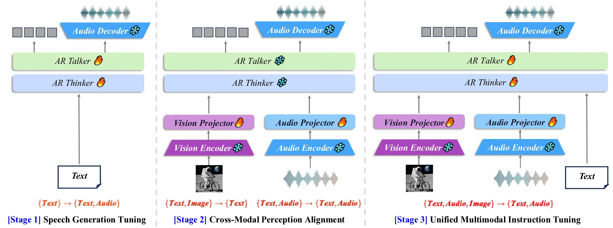
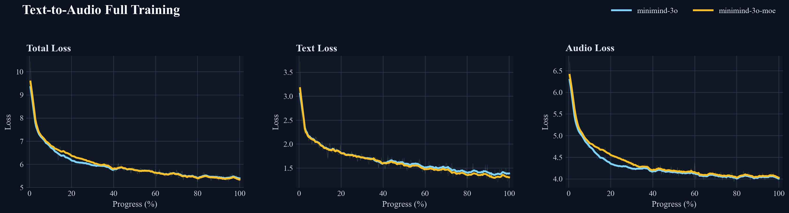
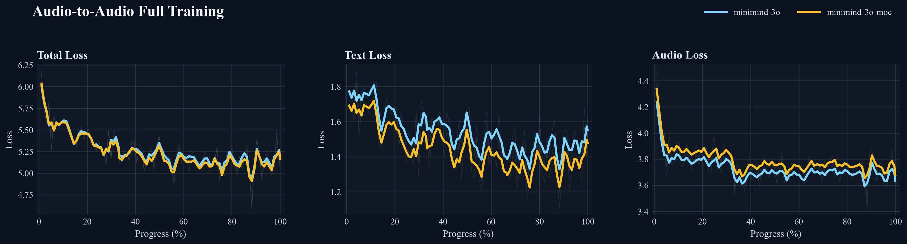

数据与训练
MiniMind-O 的训练难点不只在模型结构，还在样本如何同时承载文本 token、音频 codes、图像占位和音色条件。本页从 `OmniDataset` 到 `train_sft_omni.py` 串起完整链路。
数据集组成
项目提供 mini 与 full 两套训练数据。mini 用来低成本跑通链路；full 对应发布权重，覆盖中英文 T2A/A2A 和图像任务。
| 子集 | 任务 | 适合目标 | 注意点 |
|---|---|---|---|
| `sft_t2a_mini` | 英文文本到语音 | 先让 Talker 学会从文本语义生成音频 codes。 | 不用于复现中文能力。 |
| `sft_a2a_mini` | 英文语音到语音 | 接入语音输入和音频 projector。 | 训练规模小，适合链路验证。 |
| `sft_t2a` | 中英文 T2A | 发布权重主训练源之一。 | 数据量更大，耗时更长。 |
| `sft_a2a` | 中英文 A2A | 训练语音输入、音色和 Talker 稳定性。 | 需要更稳的资源和调参。 |
| `sft_i2t` | 图像指令 | 对齐视觉 projector。 | 常用 `vision_proj` 模式先单独对齐。 |
Parquet 字段
`dataset/omni_dataset.py` 会读取一个或多个 parquet，并统一拼成 PyArrow table。常见字段如下：
`conversations`
JSON 字符串，对话轮次。会经过 chat template 生成文本 prompt。
question_audios
用户语音输入，转成 SenseVoice fbank 后注入 <|audio_pad|> 段。
`answer_audios`
assistant 语音答案的 Mimi codes，拆成 8 层作为 Talker target。
`image_bytes`
图像二进制，进入 SigLIP2 processor。
`ref_audios`
参考音色 codes，训练时右对齐放到 assistant 起点前。
`spk_emb`
192 维 speaker embedding，放在 `audio_spk_token` 位置。
样本如何变成 9 路序列

OmniDataset.__getitem__
├─ 读取 conversations / audio / image / voice fields
├─ 生成 chat prompt，按需要插入 audio/image 占位符
├─ tokenization，padding 到 max_length
├─ generate_text_labels，只训练最后一个 assistant 回复
├─ answer_audios 拆成 8 层 audio targets
├─ ref_codes 与 speaker token 放在 assistant 起点前
├─ X_audio = Y_audio_layers[:-1]
├─ X_text = input_ids[:-1]
└─ input_ids = concat(8 audio streams, 1 text stream)训练 loss
`train_epoch` 里同时计算文本 loss 和音频 loss。文本 logits 对 `labels` 做交叉熵；8 路音频 logits 分别对 `audio_labels` 做交叉熵后平均。`audio_stop_token` 的 loss 权重更高，用来帮助 Talker 学会停止。
Text Loss
只对 assistant 区间有效，其他位置是 `-100`。
Audio Loss
8 个 codebook head 分层计算，最后取平均。
Aux Loss
MoE 场景加入专家负载相关辅助 loss；dense 时基本为零。
训练模式
| 参数 | 会训练什么 | 什么时候用 |
|---|---|---|
| `--mode all` | Thinker、Talker、audio/vision projector 等可训练主体。 | T2A 主训练、A2A 全量继续训练。 |
| `--mode audio_proj` | 只训练 `audio_proj`。 | 先把语音输入特征对齐到语言隐空间。 |
| `--mode vision_proj` | 只训练 `vision_proj`。 | 接入图像任务时，减少对语言和语音能力的扰动。 |
| `--freeze_backbone last1` | 只保留最后一层等少量参数可训练。 | 想做轻量微调时可尝试。 |
mini 训练命令
推荐从 `trainer/` 目录执行，或者直接运行 `cd trainer && bash train.sh`。
CUDA_VISIBLE_DEVICES=0 torchrun --master_port 29560 --nproc_per_node 1 train_sft_omni.py \
--learning_rate 5e-4 --data_path ../dataset/sft_t2a_mini.parquet \
--epochs 1 --batch_size 40 --use_compile 1 --from_weight llm \
--save_weight sft_zero --max_seq_len 512 --use_wandb --use_moe 0
CUDA_VISIBLE_DEVICES=0 torchrun --master_port 29560 --nproc_per_node 1 train_sft_omni.py \
--learning_rate 5e-4 --data_path ../dataset/sft_a2a_mini.parquet \
--epochs 1 --batch_size 40 --use_compile 0 --from_weight sft_zero \
--save_weight sft_zero --max_seq_len 640 --mode audio_proj --use_wandb --use_moe 0
CUDA_VISIBLE_DEVICES=0 torchrun --master_port 29560 --nproc_per_node 1 train_sft_omni.py \
--learning_rate 2e-5 --data_path ../dataset/sft_a2a_mini.parquet \
--epochs 1 --batch_size 16 --use_compile 0 --from_weight sft_zero \
--save_weight sft_zero --max_seq_len 768 --use_wandb --use_moe 0full 管线怎么理解
`trainer/train.sh` 里 full 训练并不是复杂多阶段预训练，而是按能力逐步接入：先 T2A 让 Talker 学说话，再 A2A 接入语音输入，最后 I2T/I2A 接入视觉。Dense 和 MoE 的命令结构一致，区别主要是 `--use_moe`。

